Contract layer
Campaigns, metrics and budgets are written down as contracts first. Policy, approval and rollback run on top of them, so people know what an agent must not cross before it runs.

Every ad channel has a different API and a different attribution basis. The contract layer writes those differences down first, as a Campaign IR and a Metric Contract. Where attribution differs it refuses to build a total, and where it could not see an axis it says so. Pretending a single window would commit the very error this product forbids in others.
Agents see only twelve work-level tools: investigate a drop, compare channels, draft an optimization plan, dry-run it, execute an approved plan, roll back to recorded values. No low-level channel API is exposed, and granting approval is people-only, absent from the tool list entirely.
Execution is idempotent and reads back its postconditions. Change history is explained from a hash-chained audit ledger, and a pre/post difference-in-differences runs only after the system has judged that increment is measurable at all.
Want to hold this layer?
From experiment to execution, together.
Contact